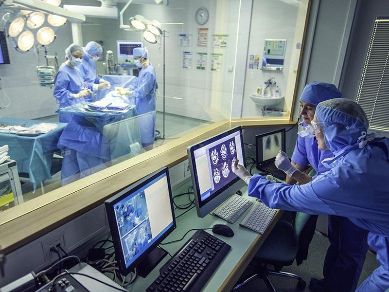
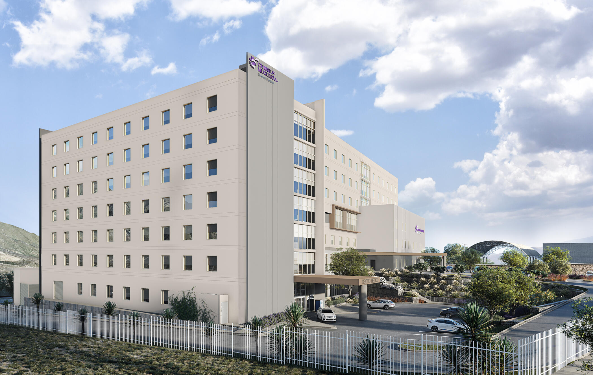
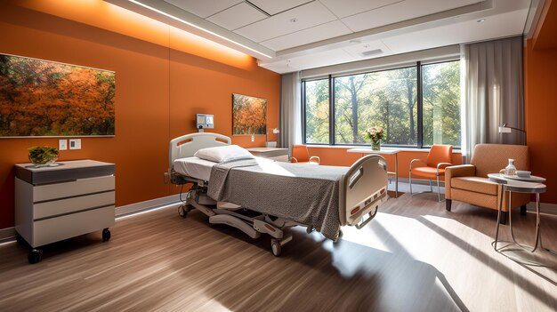
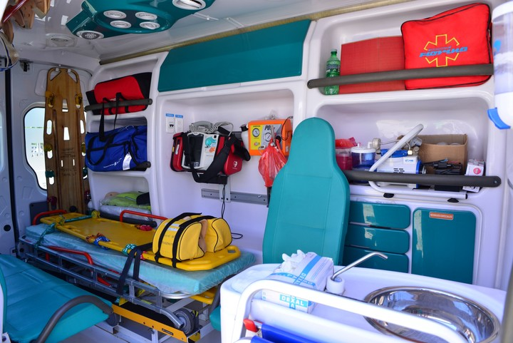

HOSPITAL JASMAN, institución médica de Alta Especialidad, soportada en la tecnología médica de vanguardia, contando con la más moderna infraestructura y brindando un servicio de excelencia, que lo posicionan como uno de los hospitales más importantes de Nuevo León.
+MAS DE 10 AÑOS DE EXPERIENCIA.
TRABAJO EN EQUIPO POR TU SALUD.
PIONESROS EN MEDICINA LABORAL Y PARA TODA LA FAMILIA.
Iniciamos operaciones como clínica JASMAN y hoy a más de 10 años de nuestra fundación, en HOSPITAL JASMAN continuamos brindando servicios médicos basados en valores, principios y prácticas por el bien de la salud de la sociedad, además de atender la medicina laboral de las principales empresas del estado. Mantenemos y elevamos el servicio médico apegado a valores y políticas de calidad. Siempre apoyado por un sólido equipo altamente capacitado y calificado en atención de servicio y manteniéndose a la vanguardia en tecnología médica.
UN HOSPITAL CÓMODO Y SEGURO
Desde las áreas de espera hasta las habitaciones, cada espacio ha sido cuidadosamente diseñado para proporcionarte un entorno acogedor y relajante. Además, hemos implementado rigurosas medidas de seguridad para garantizar tu tranquilidad, incluyendo sistemas de control de infecciones y protocolos sanitarios actualizados. En nuestro hospital, tu bienestar es nuestra prioridad, y nos esforzamos por crear un ambiente en el que te sientas cómodo y seguro en todo momento.
  UN HOSPITAL DIGITAL
En Hospital JASMAN, combinamos tecnología de vanguardia con la calidez humana que nos distingue para brindarte una experiencia excepcional en tu atención. Con la implementación de un expediente clínico electrónico, optimizamos los tiempos de atención mediante la automatización de tareas y procesos de manera digital. Este expediente contiene información clínica en tiempo real del paciente, lo que facilita a los médicos tomar decisiones informadas y precisas para brindarte el mejor cuidado posible.